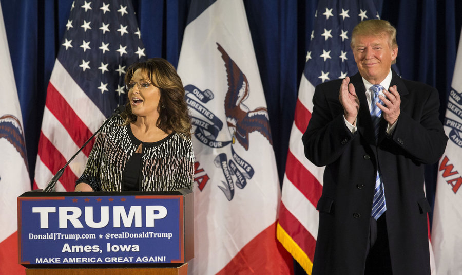

Palin's re-emergence underscores GOP split
DES MOINES, Iowa (AP) — If the Republican Party is on the verge of an implosion, Sarah Palin may have been the one who lit the fuse.
Palin's complicated relationship with GOP leaders over the past eight years is a microcosm of the party's broader struggles with its most restive members. What started with an embrace by party leaders evolved into wary tolerance, followed by a potentially irreparable split.
So it's perhaps little surprise that Palin is re-emerging on the national political scene at this moment of reckoning for Republicans. While she's hardly the conservative kingmaker she once was, Palin remains a favorite of the tea party insurgency, and her endorsement of Donald Trump for the 2016 GOP nomination gives him an added boost of conservative, anti-establishment credibility.
"He's been going rogue left and right," Palin said Tuesday, with a beaming Trump standing by her side. "He's been able to tear the veil off this idea of the system."
Mainstream Republicans have tried for the past several years to keep their system together by bringing lawmakers elected as disrupters into the fold rather than pushing them aside. It's a strategy that succeeded in winning the party the House in 2010 and the Senate in 2014, but it did little to achieve such conservative goals as overturning President Barack Obama's health care law or blocking increases in the nation's debt ceiling.
Now, the GOP system is cracking, leaving some in the establishment feeling they would be the outsiders in a party helmed by Trump — or by Texas Sen. Ted Cruz, a frequent tormentor of Republican leaders who is a strong contender for the nomination.
"I thought I was a traditional Republican conservative," says Bob Dole, the 1996 Republican presidential nominee who represented deep red Kansas in Congress for decades.
Dole has been an especially vocal critic of Cruz, who has blamed Republican failures in presidential contests on the party's tendency to elect mainstream candidates like the longtime Kansas senator. However, Dole suggested in an interview Wednesday that he might be able to make peace with a Trump presidency, saying the businessman's reputation as a "dealmaker" could mean he's able to work with Congress.
Palin's endorsement of Trump is seen as a knock against Cruz, who has been on the rise in Iowa for several weeks. She campaigned for Cruz when he ran for the Senate in 2012, and he's said her support was instrumental in his victory.
For all of her firebrand conservatism, Palin owes her place on the national stage to the mainstream Republican Party. She was a little-known Alaska governor when Sen. John McCain — seen by some Republicans as an embodiment of the party establishment — tapped her as his running mate for the 2008 election.
Palin was an awkward fit as No. 2 on the ticket, but she built an enthusiastic following with conservatives. She blended more neatly into the tea party movement that blossomed during the first years of Obama's presidency and flirted with a White House run of her own in 2012 before concentrating on political punditry and reality television.